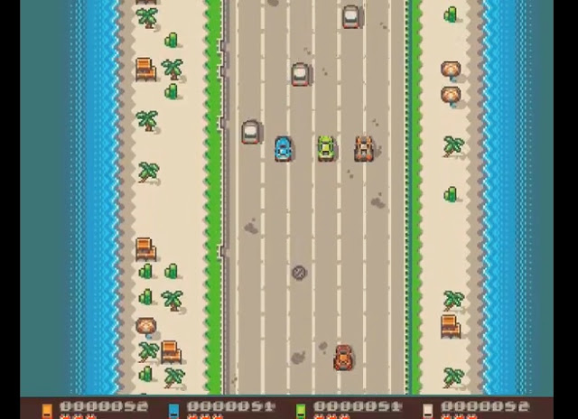
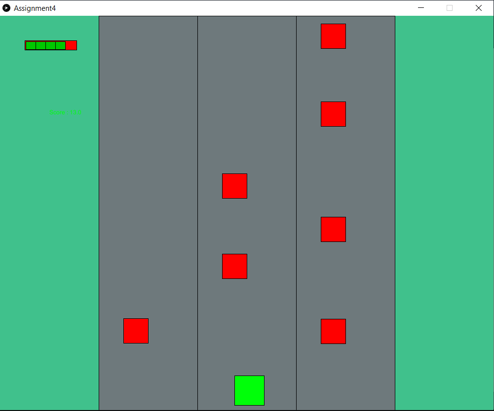
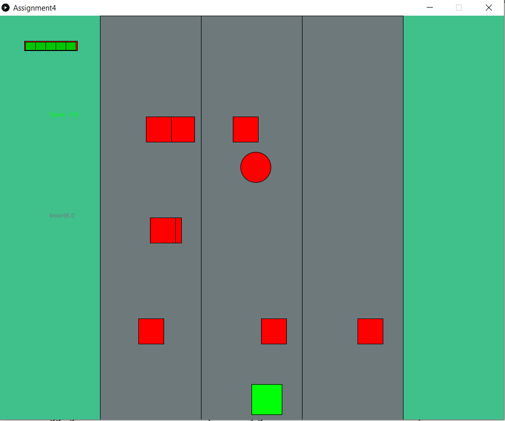
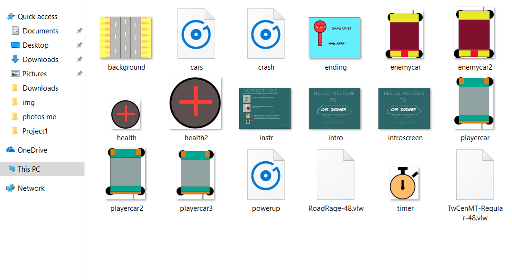
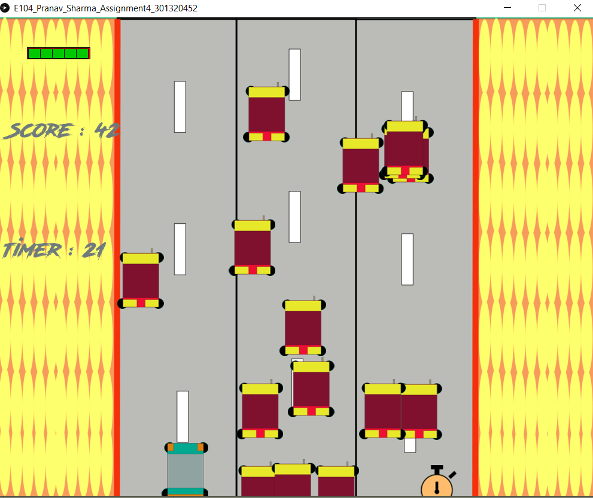

Game Development
For the course DIGITAL GAMES (IAT 167) I got the opportunity to develop my a game. Being an fan of old arcade games, I tried to re-develop a game I used to play as a kid. In the game, I would have to drive my car and switch between three lanes while avoid oncoming traffic.
The Process
My first step was implementing basic functionality and making my code functional. I used a green rectangle as the players character and used red rectangles to denote the oncoming traffic. I also made the 3 lanes and the borders of the road, which when crossed would force the player to lose health.
Once everything for my basic functionality was implemented, I wanted to incorporate some other features such as power-ups. The power-ups I wanted to implement were timer and health. The timer powerup would give the player 10 more seconds, while the health power would give the player 50 HP helping the player last longer in the game.
I followed the similar process as the first step. I created simple circle objects and implemented their functionality. Once the power-ups were working I started working on minor issues as well as added sounds and improved the aesthetics of the game.
Now that my game was functional. I created my assets such as the cars, and instruction screens. The next step was implementing the sounds, for which was of a car collision, and I compiled it all together and my game was ready.
Conclusion
The feedback I received from the teaching staff was positive. This project allowed me to create one of my favorite childhood games while learning Object oriented programming and the importance of debugging. The one area I could have improved my game on was the collision detection, which would make the game more challenging and fun.